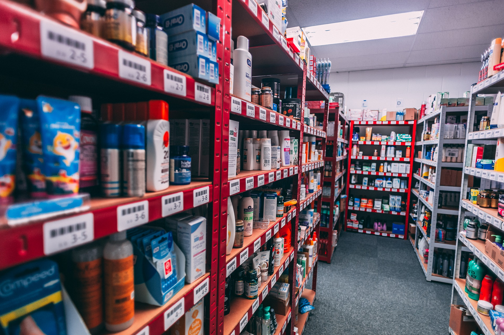
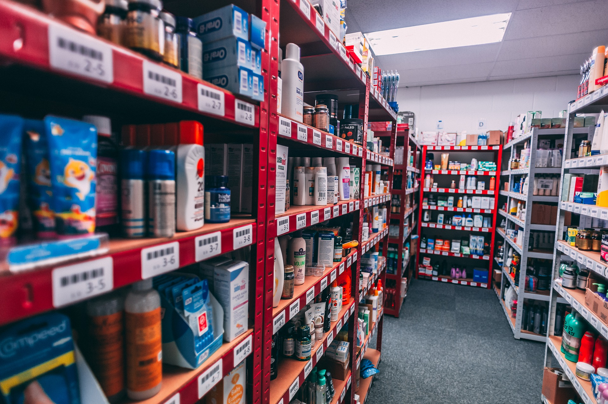

We provide various kind of Services:
Centre of Excellence: In RAR hospital basically we have,A complete heart centre.When you suspect that you have a heart condition the very worst you can do is worry about it. At RAR Heart we understand the healing power of a stress-free environment.This is why we have created healing centres focus on finding solutions to all your heart-related concerns under one roof.We Take a look at the facilities and services we offer to ensure that your stay with us is a restful,healthful experience. You will see that we really do offer you a better experience all round. In Sri Lanka Asiri Health provides more Heart Care facilities compared to other private health care facilities apart from other Private Heart Care Providers. Our state-of-the-art heart care centres led by expert cardiologists / cardiac surgeons/cardiac anaesthesiologists with years of experience in the field.Our cardiologists and surgeons have access to the latest and most sophisticated equipment to, effectively deal with any heart-related condition. We are dedicated in guiding you back to a complete, healthier and happier lifestyle.

.jpg)
Healthy body & Mind: Actually we focus the patients healthy body and mind.So we arrange several units to protect your health like pharmacy,mothe & baby care,emergency unit,eye unit...etc.
The pharmacy is the one place where all our patients converge at some point or the other during a visit to RAR Hospitals and that is why we ensure that all Pharmacies are well stocked with
products that match the most stringent international standards, and manned by efficient, qualified personnel.
We provide our pharmacyservices 24-hours indoor,outdoor and also we sold only government approved registered drugs.
 

{kind=link}
Facilities & Amenities: When it is necessary for you to reside at an RAR hospital for medical treatment you can be assured of receiving a professional and caring service
by our medical and nursing staff. In fact, our nurses are graduates of the RAR Nurses Training School, which was established in 2000 and has a reputation
for being one of the best in the private healthcare sector.We have 24-hours nursing service, well thought out medication management system, also we have fully trained and experinced staff.
Our F&B department is a further value add to the services we provide to all our patients. The entire food process adheres to HACCP principles,
ISO 22000 Food Safety Management System and other applicable regulatory requirements.
All our patients' dietary requirements are met as advised by our physicians and dietitians only.
Food & Beverage Department consist with four divisions;Food Production,Food & Beverages Serving,
Kitchen Stewarding (Cleaning) and Kitchen Administration Unit.
{kind=link}
{kind=link}